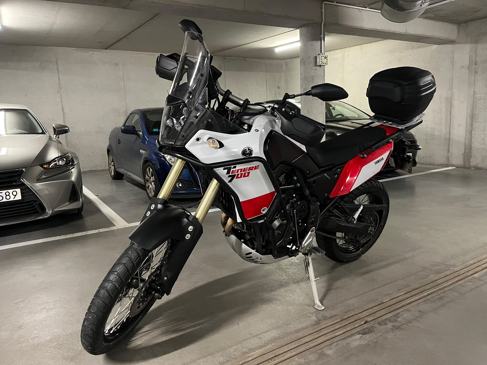

Motocykl na sprzedaż
Yamaha
Ténéré 700
31 500 zł
- Rocznik
- 2020
- Przebieg
- 27 363 km
- Nr rejestracyjny
- D0OOO0O (d0ooo0o)
- VIN
- VG5DM071000011286
Galeria
Kliknij zdjęcie, aby otworzyć je w pełnym rozmiarze.


Opis motocykla
Motocykl jest w moich rękach od nowości. Kupiłem go w salonie BM MotorYamaha Kłodzko. To wersja Euro 4, jeszcze bez katalizatora.
Sprzedaję, bo chcę więcej pojeździć z plecaczkiem, a T7 niezbyt się do tego nadaje.
Zalety
- Przewody hamulcowe w stalowym oplocie. Gumowe przewody trzeba wymieniać co cztery lata. Gdy nadeszła pora wymiany, założyłem przewody w stalowym oplocie. Zobacz zdjęcie przewodów
- Oryginalny łańcuch. Wyciągnięty mniej więcej w połowie.
- Niepowtarzalny numer rejestracyjny. Na motocyklowych tablicach stosuje się uproszczoną czcionkę, więc 0 i O wyglądają tak samo. Żadne automatyczne rozpoznawanie numerów nie będzie ci straszne.
- Garażowany od nowości. Motocykl trzymam w suchym, ogrzewanym garażu w moim bloku.
Wady
- Ślad na wydechu. Córka przypaliła o wydech podeszwę buta. Zobacz zdjęcie wydechu
- Opony z 2021 r. Noszą ślady jazdy na wprost. Nadadzą się do jazdy próbnej, bezpiecznego powrotu do domu czy pierwszej wycieczki, żeby zapoznać się ze sprzętem. Docelowo warto założyć opony według własnych upodobań.
O modelu Yamaha Ténéré 700
Ténéré 700 to motocykl turystyczno-terenowy przeznaczony do jazdy po asfalcie i poza nim. Ma dwucylindrowy silnik CP2, stalową ramę oraz wąskie, płaskie siedzenie, które ułatwia zmianę pozycji w trakcie jazdy na stojąco. Długi skok zawieszenia i wysoki prześwit pomagają pokonywać koleiny i nierówności. Siedzenie na wysokości 875 mm warto wziąć pod uwagę przy przymiarce do motocykla.
Fabryczne wyposażenie obejmuje regulowany przedni widelec, regulację napięcia wstępnego tylnej sprężyny, reflektor LED oraz ABS z możliwością wyłączenia do jazdy w terenie za pomocą jednego przycisku.
| Silnik | CP2, 2 cylindry w rzędzie, chłodzony cieczą, kąt wykorbień wału korbowego 270° |
|---|---|
| Pojemność | 689 cm³ |
| Moc maksymalna | 54 kW (ok. 73 KM) przy 9000 obr./min |
| Moment obrotowy | 68 Nm przy 6500 obr./min |
| Skrzynia i napęd | 6 biegów, napęd łańcuchem |
| Skok zawieszenia | 210 mm z przodu, 200 mm z tyłu |
| Tarcze hamulcowe | 2 × 282 mm z przodu, 245 mm z tyłu |
| Dł. × szer. × wys. | 2370 × 910 × 1455 mm |
|---|---|
| Wysokość siedzenia | 875 mm |
| Rozstaw osi | 1595 mm |
| Prześwit | 240 mm |
| Masa z pełnym bakiem | 204 kg |
| Zbiornik paliwa | 16 l |
| Koło i opona z przodu | Szprychowe 21″, 90/90-21 |
| Koło i opona z tyłu | Szprychowe 18″, 150/70 R18 |
Dane fabryczne wersji europejskiej z 2020 r. Karta modelu Yamaha (PDF, po angielsku).
Kontakt
- Telefon
- 691 690 708
- Miejsce oględzin
- Wrocław